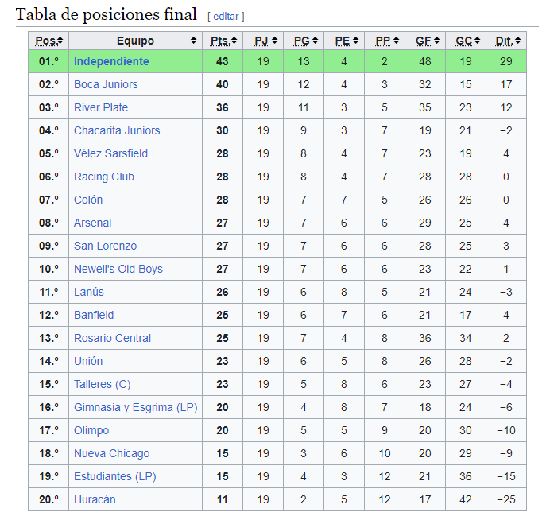
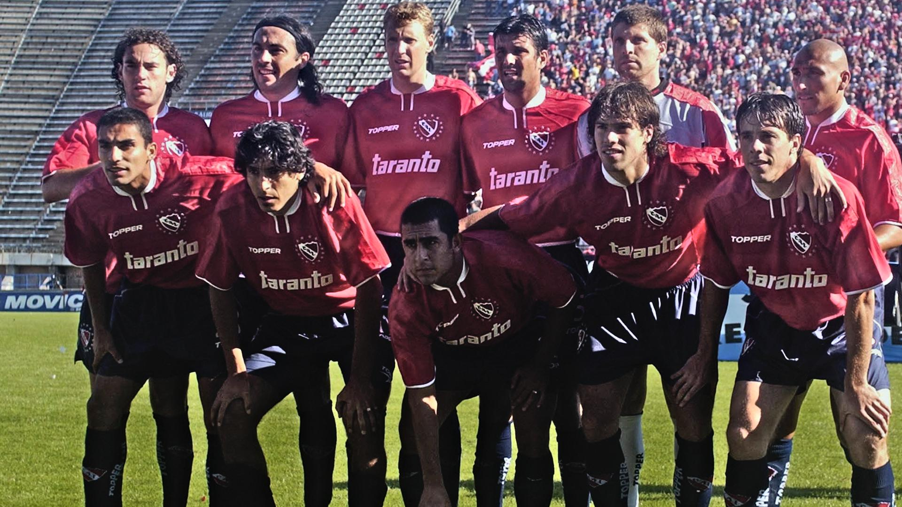

Rojo mi buen amigo
Tabla de posiciones

Plantel Campeón

Asi fue el torneo
El Torneo Apertura 2002 fue el primero y el que comenzó la temporada 2002-03 de la Primera División de Argentina de fútbol. Inició el 26 de julio y finalizó el 1 de diciembre. El Club Atlético Independiente se coronó campeón por decimosexta vez, bajo la dirección técnica de Américo Rubén Gallego. Fue el último título de Primera División obtenido por Independiente hasta la fecha. Obtuvo así la clasificación a la Copa Libertadores 2004.
El torneo se desarrollo con un todos contra todos